Data transformation
2015-09-30
- Start with raw gene counts
- Sum counts per lane by sample
- Create annotation file
- Create reads file
- Create molecules per lane file
- Create molecules file
- Filter data
- Correct for collision probability
- Calculating counts per million
- Linear transformation with ERCC controls
- Mixed model for batch-effect correction
- Data transformation figure
- Session information
Last updated: 2015-11-02
Code version: f451005068e895a03d350370f836e185da999881
library("biomaRt")
library("data.table")
library("dplyr")
library("limma")
library("edgeR")
library("ggplot2")
library("grid")
library("cowplot")
theme_set(theme_bw(base_size = 12))
source("functions.R")This file performs the transformations and outputs various intermediate data files used for our analysis.
Creates the following files:
- Annotation
- annotation.txt - Annotation file
- annotation-filter.txt - Annotation file with only the high quality single cells
- Reads
- reads.txt - Read counts in single cells for all genes with at least one observed read
- reads-bulk.txt - Read counts in bulk samples for all genes with at least one observed read
- reads-filter.txt - Read counts in high quality single cells for filtered genes
- reads-bulk-filter.txt - Read counts in bulk samples for filtered genes
- reads-bulk-cpm.txt - Reads (log2 cpm) in bulk samples for endogenous genes
- reads-bulk-cpm-ercc.txt - Reads (log2 cpm) in bulk samples for ERCC genes
- Molecules
- molecules.txt - Molecule counts in single cells for all genes with at least one observed read
- molecules-per-lane.txt - (for QC purposes only) Inflated molecule counts in single cell and bulk samples obtained by summing each lane
- molecules-filter.txt - Molecule counts in high quality single cells for filtered genes
- molecules-cpm.txt - Molecules (log2 cpm) in high quality single cells for endogenous genes
- molecules-cpm-ercc.txt - Molecules (log2 cpm) in high quality single cells for ERCC genes
- molecules-cpm-trans.txt - Molecules in high quality single cells after linear transformation with ERCC
- molecules-final.txt - Molecules in high quality single cells after removing unwanted variation with mixed model
Start with raw gene counts
We start with the gene counts file produced by our pipeline for processing the sequencing data.
counts <- fread("/mnt/gluster/data/internal_supp/singleCellSeq/gene-counts.txt")
Read 0.0% of 12402 rows
Read 80.6% of 12402 rows
Read 12402 rows and 20427 (of 20427) columns from 0.524 GB file in 00:00:38It is a very large file, and when read into R it uses 0.9 Gb of memory. Each row corresponds to a specific sample processed in a specific manner.
counts %>% select(1:10) %>% slice(1:10) individual batch well index lane flow_cell sickle rmdup
1: 19239 2 bulk NA NA NA quality-trimmed molecules
2: 19098 1 B06 NA NA NA quality-trimmed reads
3: 19098 1 H01 NA NA NA quality-trimmed reads
4: 19098 1 A05 NA NA NA quality-trimmed reads
5: 19098 1 C02 NA NA NA quality-trimmed reads
6: 19098 1 H06 NA NA NA quality-trimmed reads
7: 19098 2 D10 NA NA NA quality-trimmed reads
8: 19098 2 D12 NA NA NA quality-trimmed reads
9: 19098 2 E09 NA NA NA quality-trimmed reads
10: 19098 3 B12 NA NA NA quality-trimmed reads
ENSG00000186092 ENSG00000237683
1: 0 46
2: 0 0
3: 0 2
4: 0 0
5: 0 0
6: 0 0
7: 0 2
8: 0 38
9: 0 0
10: 0 0This granular data is used for performing quality control at the level of sequencing lane.
Sum counts per lane by sample
For downstream analyses, we need to sum the number of reads or molecules for every gene for each sample across sequencing runs. The molecule counts derived using this method will be inflated because duplicate reads (i.e. have the same UMI and start site) will only be removed within a lane. Thus these per-lane molecule count levels are only used for QC purposes.
counts_by_sample <- counts %>%
filter(!is.na(lane), sickle == "quality-trimmed") %>%
select(individual, batch, well, rmdup, starts_with("ENSG"), starts_with("ERCC")) %>%
group_by(individual, batch, well, rmdup) %>%
summarise_each(funs(sum)) %>%
arrange(individual, batch, well, rmdup) %>%
ungroupCreate annotation file
The annotation file contains the meta-information for each sample.
anno <- counts_by_sample %>%
filter(rmdup == "molecules") %>%
select(individual:well) %>%
as.data.frameReformat the annotation file:
- Add the string “NA” in front of the individual ID’s so that they are not interpreted as numeric
- The column denoting the 3 replicates is now named
replicate - Add the string “r” in front of the replciate numbers so that they are not interpreted as numeric
- Create new column called
batchwhich corresponds to the 9 batches (3 individuals x 3 reps)
anno <- anno %>% rename(replicate = batch) %>%
mutate(individual = paste0("NA", individual),
replicate = paste0("r", replicate),
batch = paste(individual, replicate, sep = "."),
sample_id = paste(batch, well, sep = "."))
head(anno) individual replicate well batch sample_id
1 NA19098 r1 A01 NA19098.r1 NA19098.r1.A01
2 NA19098 r1 A02 NA19098.r1 NA19098.r1.A02
3 NA19098 r1 A03 NA19098.r1 NA19098.r1.A03
4 NA19098 r1 A04 NA19098.r1 NA19098.r1.A04
5 NA19098 r1 A05 NA19098.r1 NA19098.r1.A05
6 NA19098 r1 A06 NA19098.r1 NA19098.r1.A06Output annotation file.
write.table(anno, "../data/annotation.txt", quote = FALSE, sep = "\t",
row.names = FALSE)Create reads file
The reads file contains only the counts. Each row is a gene and each column is a sample. The columns in the reads file correspond to the rows in the annotation file.
reads <- counts_by_sample %>%
filter(rmdup == "reads") %>%
select(-(individual:rmdup)) %>%
t
dim(reads)[1] 20419 873colnames(reads) <- anno$sample_id
reads[1:10, 1:5] NA19098.r1.A01 NA19098.r1.A02 NA19098.r1.A03
ENSG00000186092 0 0 0
ENSG00000237683 2 0 6
ENSG00000235249 0 0 0
ENSG00000185097 0 0 0
ENSG00000269831 0 0 0
ENSG00000269308 0 0 0
ENSG00000187634 0 0 0
ENSG00000268179 0 0 0
ENSG00000188976 56 19 0
ENSG00000187961 0 0 0
NA19098.r1.A04 NA19098.r1.A05
ENSG00000186092 0 0
ENSG00000237683 46 0
ENSG00000235249 0 0
ENSG00000185097 0 0
ENSG00000269831 0 0
ENSG00000269308 0 0
ENSG00000187634 0 0
ENSG00000268179 0 0
ENSG00000188976 3 165
ENSG00000187961 0 0Only genes with at least one read observed in at least one of the single cell or bulk samples are maintained.
genes_observed <- rownames(reads)[rowSums(reads) > 0]
reads <- reads[rownames(reads) %in% genes_observed, ]There are 18568 genes with at least one read.
Separate the bulk samples from the single cells.
reads_bulk <- reads[, anno$well == "bulk"]
reads <- reads[, anno$well != "bulk"]
stopifnot(ncol(reads_bulk) == 3 * 3, ncol(reads) == 3 * 3 * 96)Output read counts.
write.table(reads, "../data/reads.txt", quote = FALSE, sep = "\t",
col.names = NA)
write.table(reads_bulk, "../data/reads-bulk.txt", quote = FALSE, sep = "\t",
col.names = NA)Create molecules per lane file
Create a molecules per lane file similar to the reads file.
molecules_per_lane <- counts_by_sample %>%
filter(rmdup == "molecules") %>%
select(-(individual:rmdup)) %>%
t
dim(molecules_per_lane)[1] 20419 873colnames(molecules_per_lane) <- anno$sample_idOnly genes with at least one read observed in at least one of the single cell or bulk samples are maintained.
molecules_per_lane <- molecules_per_lane[rownames(molecules_per_lane) %in% genes_observed, ]
stopifnot(nrow(molecules_per_lane) == nrow(reads))Output molecule per lane counts.
write.table(molecules_per_lane, "../data/molecules-per-lane.txt", quote = FALSE, sep = "\t",
col.names = NA)Create molecules file
Reads with the same UMI and start position need to be removed using all the data for a given sample. Otherwise the counts will be inflated because the same read can be sequenced across multiple lanes. Post-mapping we combined all the reads per sample and removed duplicate UMIs (pipeline). The data from these combined samples have NA recorded for index, lane, and flow_cell.
counts_combined <- counts %>%
filter(is.na(lane), sickle == "quality-trimmed") %>%
select(individual, batch, well, rmdup, starts_with("ENSG"), starts_with("ERCC")) %>%
arrange(individual, batch, well, rmdup)
stopifnot(counts_combined$individual[c(TRUE, FALSE)] == substr(anno$individual, 3, 8),
counts_combined$batch[c(TRUE, FALSE)] == substr(anno$replicate, 2, 2),
counts_combined$well[c(TRUE, FALSE)] == anno$well)Create molecules file similar to reads file.
molecules <- counts_combined %>%
filter(rmdup == "molecules") %>%
select(-(individual:rmdup)) %>%
t
dim(molecules)[1] 20419 873colnames(molecules) <- anno$sample_idOnly genes with at least one read observed in at least one of the single cell or bulk samples are maintained.
molecules <- molecules[rownames(molecules) %in% genes_observed, ]
stopifnot(nrow(molecules) == nrow(reads))Remove bulk samples from molecules file. Because bulk samples have many more molecules than a single cell, the UMIs are not valid.
molecules <- molecules[, anno$well != "bulk"]
stopifnot(ncol(molecules) == 3 * 3 * 96)Output molecule counts.
write.table(molecules, "../data/molecules.txt", quote = FALSE, sep = "\t",
col.names = NA)Filter data
Filter cells
We performed quality control at the level of single cell samples to identify low quality single cells.
Input list of quality single cells.
quality_single_cells <- scan("../data/quality-single-cells.txt",
what = "character")We filter the annotation, reads, and molecules data to only include quality single cells. Note that this means the filtered annotation file no longer contains information of the bulk samples.
anno_filter <- anno %>% filter(sample_id %in% quality_single_cells)
reads_filter <- reads[, colnames(reads) %in% quality_single_cells]
molecules_filter <- molecules[, colnames(molecules) %in% quality_single_cells]
stopifnot(nrow(anno_filter) == ncol(reads_filter),
nrow(anno_filter) == ncol(molecules_filter),
anno_filter$sample_id == colnames(reads_filter),
anno_filter$sample_id == colnames(molecules_filter))The number of good quality cells is not even across batches.
table(anno_filter$individual, anno_filter$replicate)
r1 r2 r3
NA19098 85 0 57
NA19101 80 71 50
NA19239 78 68 79Filter genes
We filter the genes to exlude both those that are lowly expressed or over-expressed (>= 1024 molecules in a given cell).
We identify the lower cutoff using the mean log2 molecule counts per million (cpm) in the 568 high quality single cells.
molecules_cpm_mean <- rowMeans(cpm(molecules_filter, log = TRUE))
hist(molecules_cpm_mean, xlab = "Mean log2 molecule cpm in single cells",
ylab = "Number of genes", main = "Identifying expression cutoff")
lower_exp_cutoff <- 2
abline(v = lower_exp_cutoff, col = "red")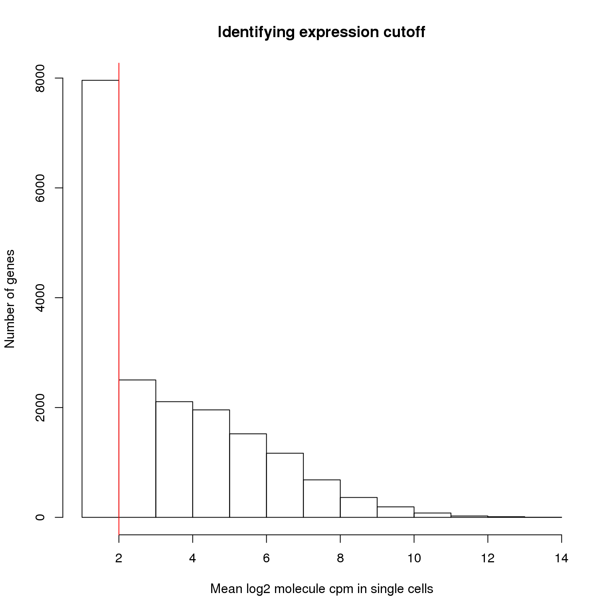
genes_pass_filter <- rownames(molecules_filter)[molecules_cpm_mean > lower_exp_cutoff]10609 genes have a mean log2 molecule cpm greater than 2, including 34 ERCC genes.
Next we identify any genes which have greater than 1024 molecules in any given single cell. These are above our theoretical maximum number of UMIs (it can happen when a highly expressed gene as multiple start sites), and thus we cannot correct them for the collision probability.
overexpressed_rows <- apply(molecules_filter, 1, function(x) any(x >= 1024))
overexpressed_genes <- rownames(molecules_filter)[overexpressed_rows]
overexpressed_genes [1] "ENSG00000197061" "ENSG00000198888" "ENSG00000198763"
[4] "ENSG00000198804" "ENSG00000198712" "ENSG00000228253"
[7] "ENSG00000198899" "ENSG00000198938" "ENSG00000198886"
[10] "ENSG00000198786" "ENSG00000198727"ensembl <- useMart(host = "grch37.ensembl.org",
biomart = "ENSEMBL_MART_ENSEMBL",
dataset = "hsapiens_gene_ensembl")
overexpressed_genes_info <- getBM(attributes = c("ensembl_gene_id", "chromosome_name",
"external_gene_name", "transcript_count",
"description"),
filters = "ensembl_gene_id",
values = overexpressed_genes[grep("ENSG", overexpressed_genes)],
mart = ensembl)
overexpressed_genes_info ensembl_gene_id chromosome_name external_gene_name transcript_count
1 ENSG00000197061 6 HIST1H4C 1
2 ENSG00000198712 MT MT-CO2 1
3 ENSG00000198727 MT MT-CYB 1
4 ENSG00000198763 MT MT-ND2 1
5 ENSG00000198786 MT MT-ND5 1
6 ENSG00000198804 MT MT-CO1 1
7 ENSG00000198886 MT MT-ND4 1
8 ENSG00000198888 MT MT-ND1 1
9 ENSG00000198899 MT MT-ATP6 1
10 ENSG00000198938 MT MT-CO3 1
11 ENSG00000228253 MT MT-ATP8 1
description
1 histone cluster 1, H4c [Source:HGNC Symbol;Acc:4787]
2 mitochondrially encoded cytochrome c oxidase II [Source:HGNC Symbol;Acc:7421]
3 mitochondrially encoded cytochrome b [Source:HGNC Symbol;Acc:7427]
4 mitochondrially encoded NADH dehydrogenase 2 [Source:HGNC Symbol;Acc:7456]
5 mitochondrially encoded NADH dehydrogenase 5 [Source:HGNC Symbol;Acc:7461]
6 mitochondrially encoded cytochrome c oxidase I [Source:HGNC Symbol;Acc:7419]
7 mitochondrially encoded NADH dehydrogenase 4 [Source:HGNC Symbol;Acc:7459]
8 mitochondrially encoded NADH dehydrogenase 1 [Source:HGNC Symbol;Acc:7455]
9 mitochondrially encoded ATP synthase 6 [Source:HGNC Symbol;Acc:7414]
10 mitochondrially encoded cytochrome c oxidase III [Source:HGNC Symbol;Acc:7422]
11 mitochondrially encoded ATP synthase 8 [Source:HGNC Symbol;Acc:7415]11 genes have molecule counts greater than or equal to 1024 in at least one single cell, including 0.
Update the list of genes passing the filters.
genes_pass_filter <- setdiff(genes_pass_filter, overexpressed_genes)Filter the data to only include the subset of 10598 genes which pass the lower and upper expression cutoffs. This subset includes 34 ERCC genes.
reads_filter <- reads_filter[rownames(reads_filter) %in% genes_pass_filter, ]
molecules_filter <- molecules_filter[rownames(molecules_filter) %in% genes_pass_filter, ]
reads_bulk_filter <- reads_bulk[rownames(reads_bulk) %in% genes_pass_filter, ]
stopifnot(nrow(reads_filter) == length(genes_pass_filter),
dim(reads_filter) == dim(molecules_filter),
nrow(reads_bulk_filter) == nrow(molecules_filter))Output filtered data.
write.table(anno_filter, "../data/annotation-filter.txt", quote = FALSE,
sep = "\t", row.names = FALSE)
write.table(reads_filter, "../data/reads-filter.txt", quote = FALSE,
sep = "\t", col.names = NA)
write.table(molecules_filter, "../data/molecules-filter.txt", quote = FALSE,
sep = "\t", col.names = NA)
write.table(reads_bulk_filter, "../data/reads-bulk-filter.txt", quote = FALSE,
sep = "\t", col.names = NA)PCA of filtered data
pca_reads_filter <- run_pca(reads_filter)
pca_reads_filter_plot <- plot_pca(pca_reads_filter$PCs, explained = pca_reads_filter$explained,
metadata = anno_filter, color = "individual",
shape = "replicate") +
labs(title = "Filtered raw reads for single cells")
pca_reads_filter_plot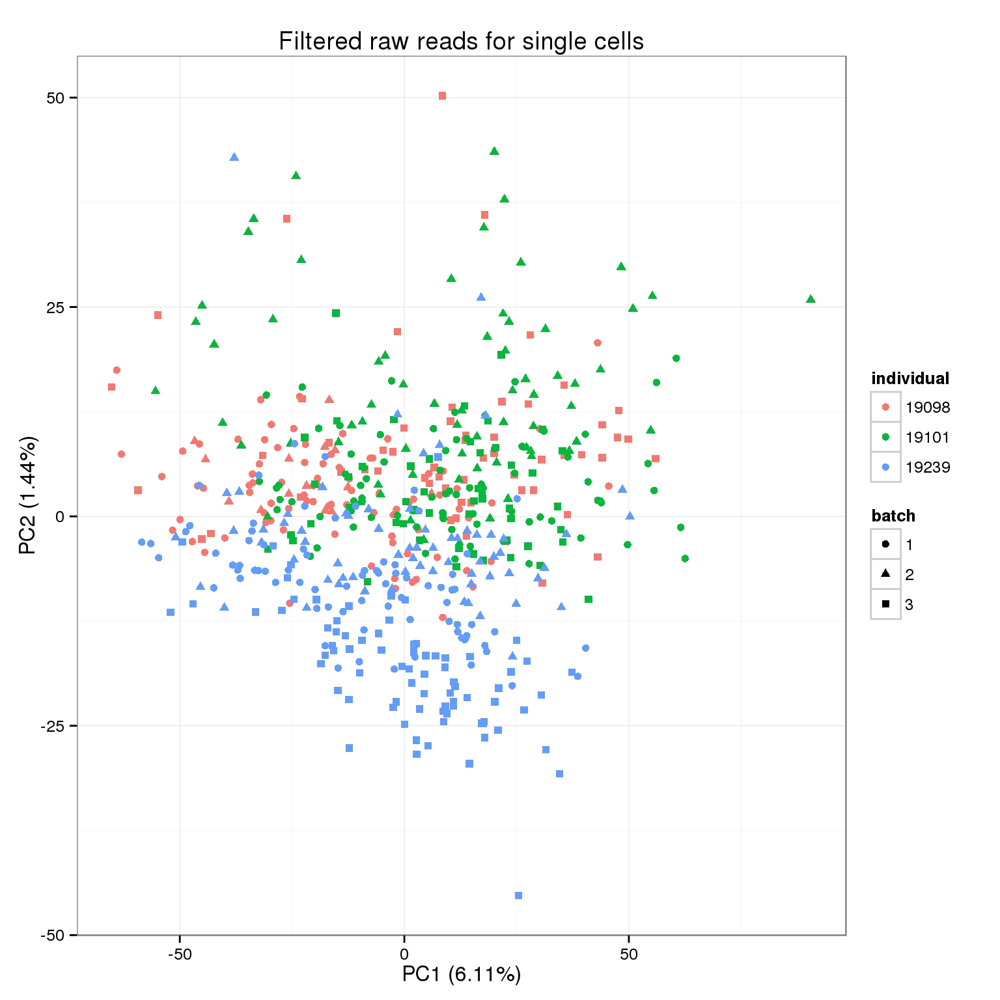
pca_molecules_filter <- run_pca(molecules_filter)
pca_molecules_filter_plot <- plot_pca(pca_molecules_filter$PCs, explained = pca_molecules_filter$explained,
metadata = anno_filter, color = "individual",
shape = "replicate") +
labs(title = "Filtered raw molecules for single cells")
pca_molecules_filter_plot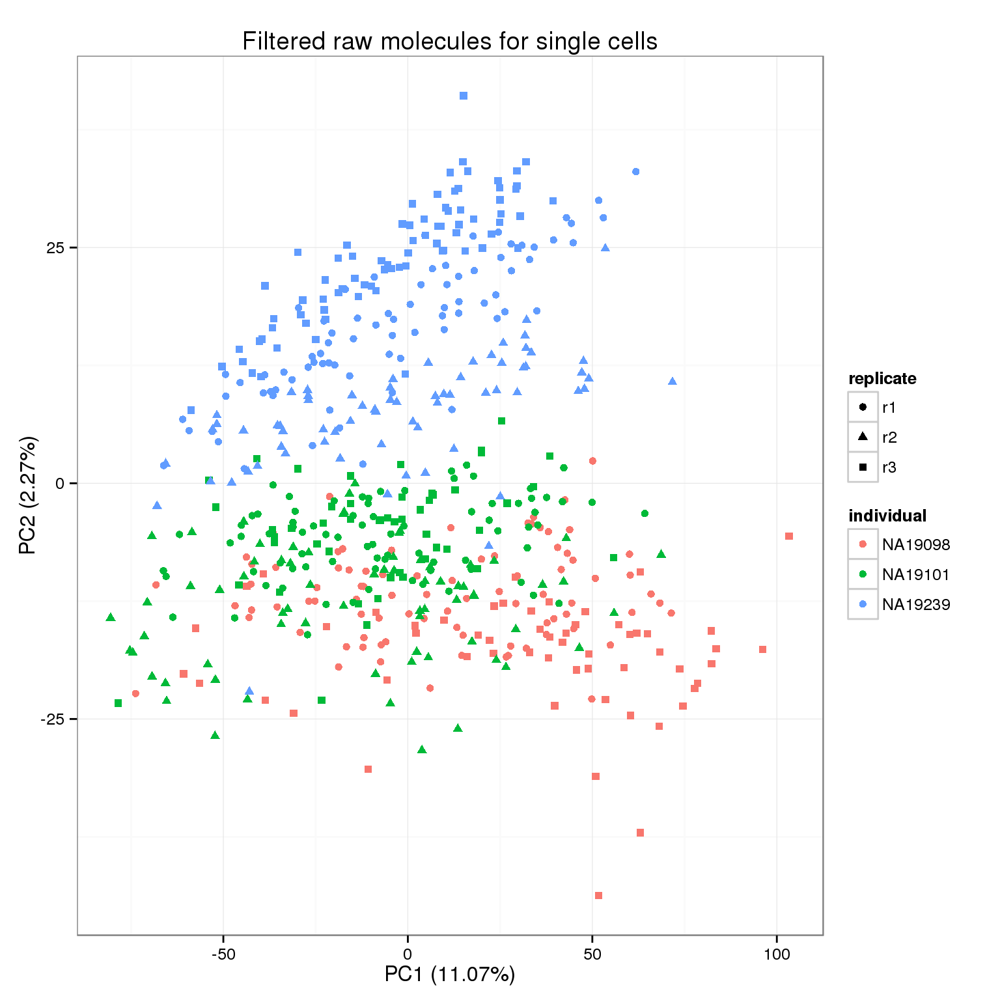
pca_reads_bulk_filter <- run_pca(reads_bulk_filter)
pca_reads_bulk_filter_plot <- plot_pca(pca_reads_bulk_filter$PCs, explained = pca_reads_bulk_filter$explained,
metadata = anno[anno$well == "bulk", ], color = "individual",
shape = "replicate") +
labs(title = "Filtered raw reads for bulk samples")
pca_reads_bulk_filter_plot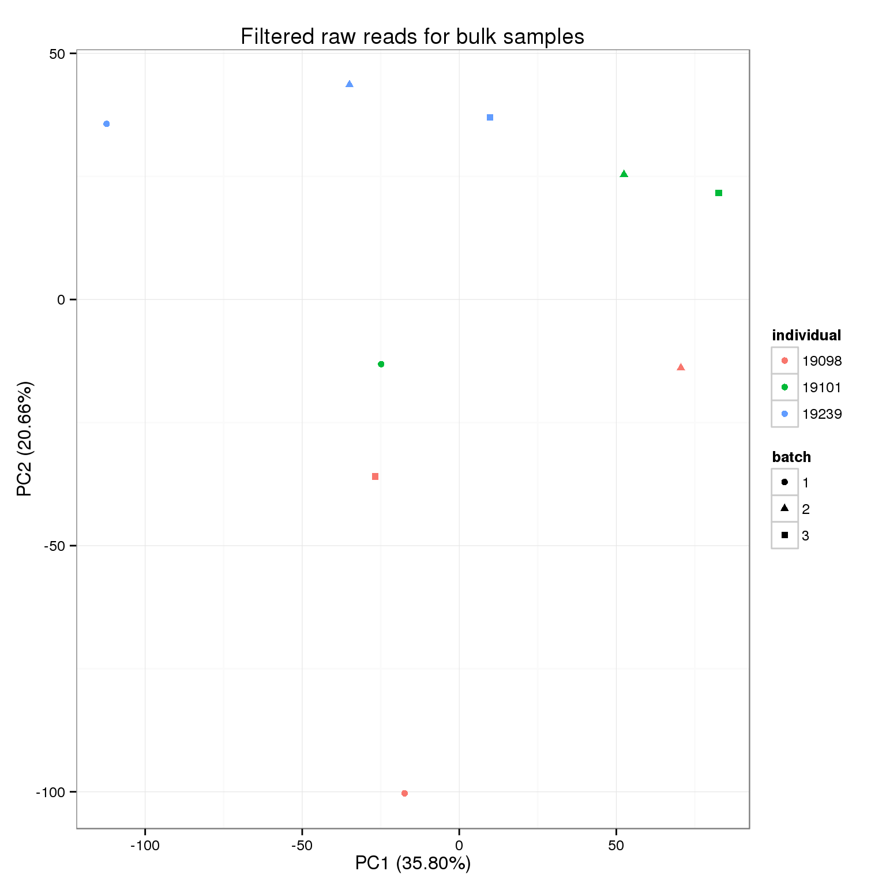
Correct for collision probability
Due to the stochasticity of the sampling process, not all molecules will be tagged with a UMI and sequenced. We correct for this “collision probability” following the method applied in Grun et al. 2014.
molecules_collision <- -1024 * log(1 - molecules_filter / 1024)pca_molecules_collision <- run_pca(molecules_collision)
pca_molecules_collision_plot <- plot_pca(pca_molecules_collision$PCs, explained = pca_molecules_collision$explained,
metadata = anno_filter, color = "individual",
shape = "replicate") +
labs(title = "Collision probability corrected molecules for single cells")
pca_molecules_collision_plot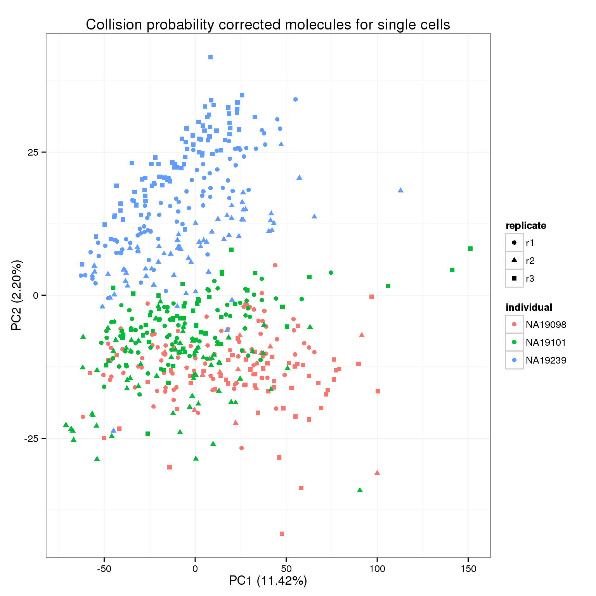
Calculating counts per million
We calculate the log2 counts per million (cpm) separately for the endogenous and ERCC genes.
ercc_rows <- grepl("ERCC", rownames(reads_bulk_filter))Reads bulk endogenous
reads_bulk_cpm <- cpm(reads_bulk_filter[!ercc_rows, ], log = TRUE)
write.table(round(reads_bulk_cpm, digits = 6), "../data/reads-bulk-cpm.txt", quote = FALSE,
sep = "\t", col.names = NA)pca_reads_bulk_cpm <- run_pca(reads_bulk_cpm)
pca_reads_bulk_cpm_plot <- plot_pca(pca_reads_bulk_cpm$PCs, explained = pca_reads_bulk_cpm$explained,
metadata = anno[anno$well == "bulk", ], color = "individual",
shape = "replicate") +
labs(title = "Reads (log2 cpm) for bulk samples")
pca_reads_bulk_cpm_plot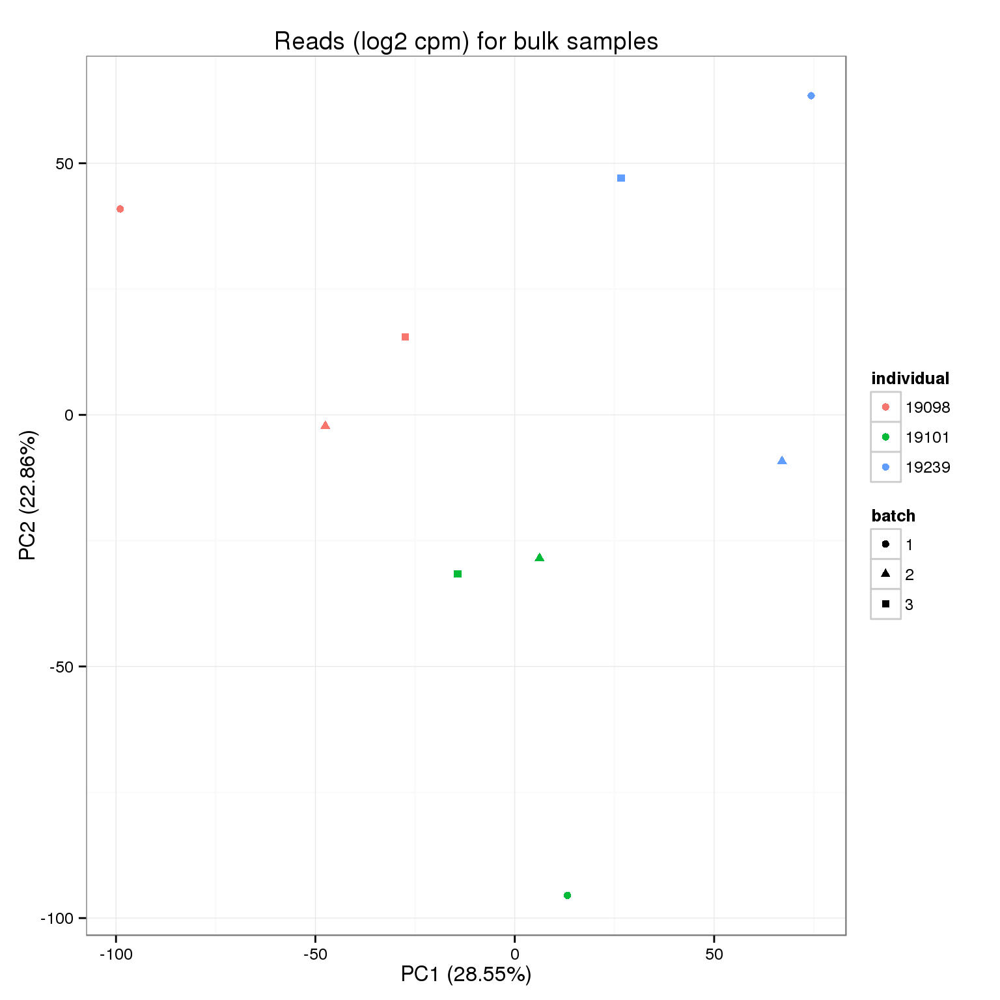
Reads bulk ERCC
reads_bulk_cpm_ercc <- cpm(reads_bulk_filter[ercc_rows, ], log = TRUE)
write.table(round(reads_bulk_cpm_ercc, digits = 6), "../data/reads-bulk-cpm-ercc.txt", quote = FALSE,
sep = "\t", col.names = NA)Molecules single cell endogenous
molecules_cpm <- cpm(molecules_collision[!ercc_rows, ], log = TRUE)
write.table(round(molecules_cpm, digits = 6), "../data/molecules-cpm.txt", quote = FALSE,
sep = "\t", col.names = NA)pca_molecules_cpm <- run_pca(molecules_cpm)
pca_molecules_cpm_plot <- plot_pca(pca_molecules_cpm$PCs, explained = pca_molecules_cpm$explained,
metadata = anno_filter, color = "individual",
shape = "replicate") +
labs(title = "Molecules (log2 cpm) for single cells")
pca_molecules_cpm_plot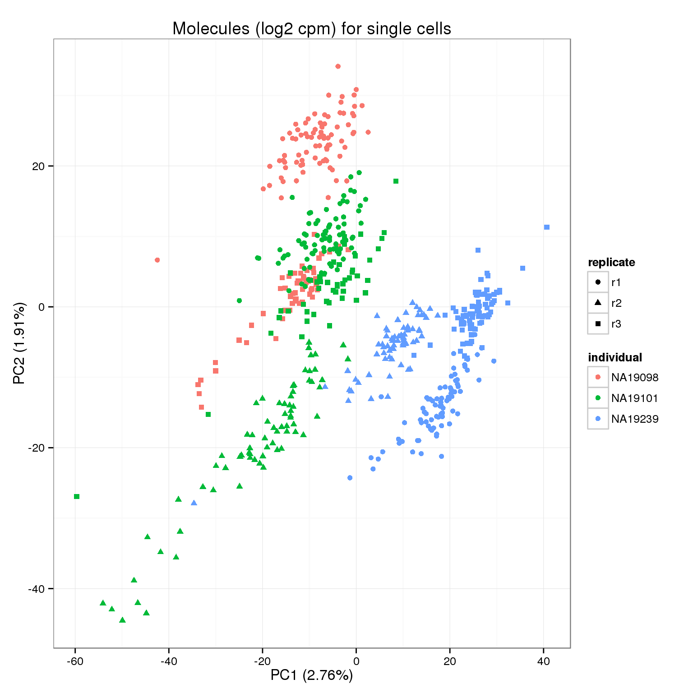
Molecules single cell ERCC
molecules_cpm_ercc <- cpm(molecules_collision[ercc_rows, ], log = TRUE)
write.table(round(molecules_cpm_ercc, digits = 6), "../data/molecules-cpm-ercc.txt", quote = FALSE,
sep = "\t", col.names = NA)Linear transformation with ERCC controls
To correct for technical effects across the single cells, we use the ERCC spike-in genes. We compare the observed number of ERCC molecules in each sample to the expected number of ERCC molecules and fit the relationship with a linear model. We then use this model to linearly transform the observed gene molecule counts within each single cell.
The expected number of ERCC molecules per well was calculated in another analysis.
ercc <- read.table("../data/expected-ercc-molecules.txt", header = TRUE,
stringsAsFactors = FALSE)
head(ercc) id conc_mix1 ercc_molecules_well
1 ERCC-00130 30000.000 4877.93485
2 ERCC-00004 7500.000 1219.48371
3 ERCC-00136 1875.000 304.87093
4 ERCC-00108 937.500 152.43546
5 ERCC-00116 468.750 76.21773
6 ERCC-00092 234.375 38.10887We need to filter the 92 ERCC genes to only include those that passed the expression filters.
ercc <- ercc[ercc$id %in% rownames(molecules_cpm_ercc), ]
ercc <- ercc[order(ercc$id), ]
stopifnot(ercc$id == rownames(molecules_cpm_ercc))Because the molecule counts have been converted to log2 cpm, we also convert the expected ERCC molecule counts to log2 cpm.
ercc$log2_cpm <- cpm(ercc$ercc_molecules_well, log = TRUE)We perform the linear transformation per single cell.
molecules_cpm_trans <- molecules_cpm
molecules_cpm_trans[, ] <- NA
intercept <- numeric(length = ncol(molecules_cpm_trans))
slope <- numeric(length = ncol(molecules_cpm_trans))
for (i in 1:ncol(molecules_cpm_trans)) {
fit <- lm(molecules_cpm_ercc[, i] ~ ercc$log2_cpm)
intercept[i] <- fit$coefficients[1]
slope[i] <- fit$coefficients[2]
# Y = mX + b -> X = (Y - b) / m
molecules_cpm_trans[, i] <- (molecules_cpm[, i] - intercept[i]) / slope[i]
}
stopifnot(!is.na(molecules_cpm_trans))Here is a visualization of what happened using the first single cell as an example.
plot(ercc$log2_cpm, molecules_cpm_ercc[, 1],
xlab = "Expected log2 cpm", ylab = "Observed log2 cpm",
main = "Example linear transformation - endogenous genes in red")
abline(intercept[1], slope[1])
points(molecules_cpm_trans[, 1], molecules_cpm[, 1], col = "red")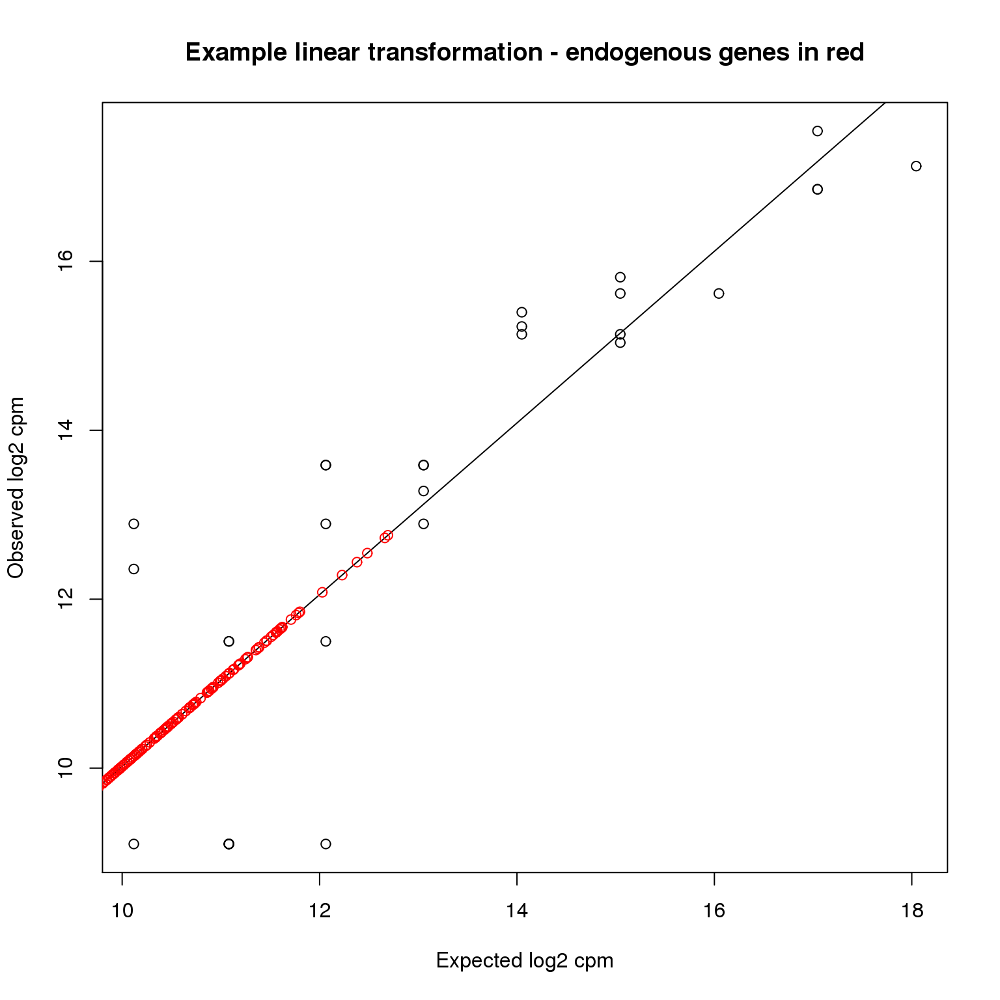
The distribution of the slope and intercept across the batches was similar, with the exception of the outlier 19098 batch 2.
boxplot(intercept ~ anno_filter$batch,
xlab = "", ylab = "Intercept", las = 3,
main = "Variation in intercept from linear transformation")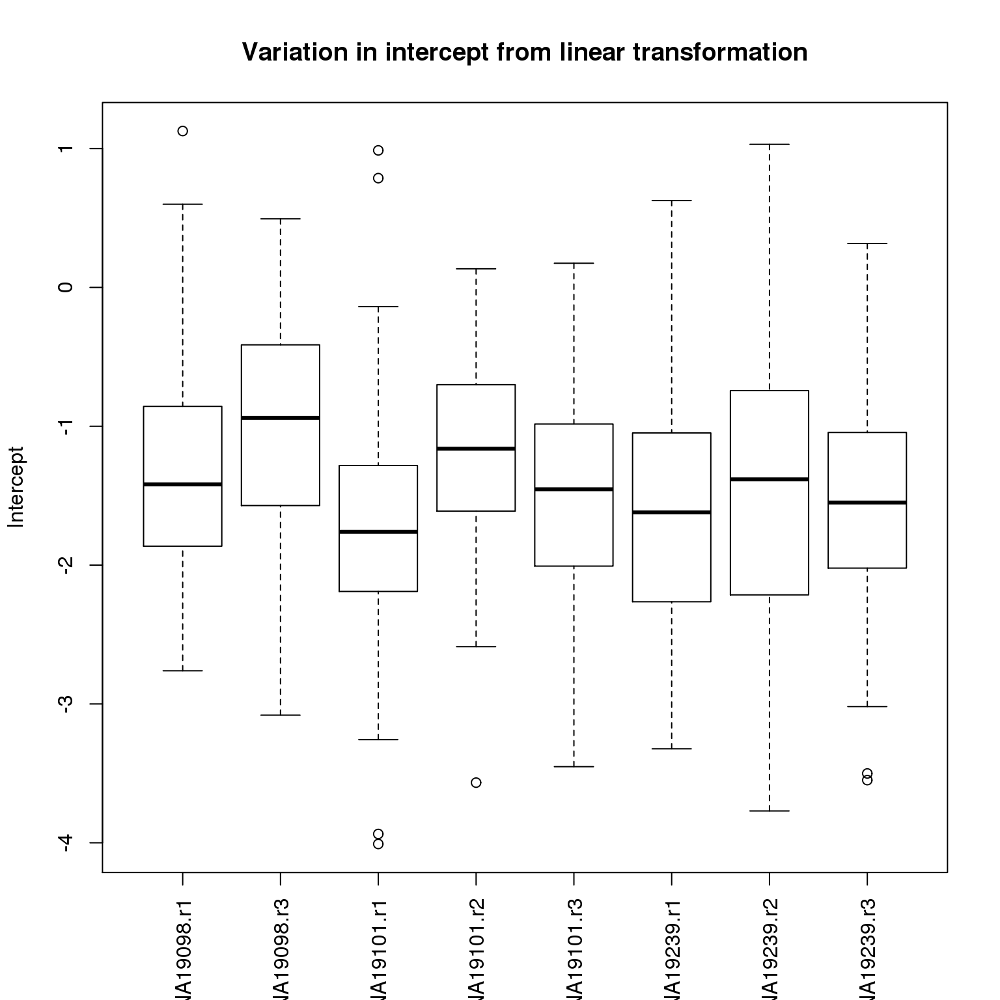
boxplot(slope ~ anno_filter$batch,
xlab = "", ylab = "Slope", las = 3,
main = "Variation in slope from linear transformation")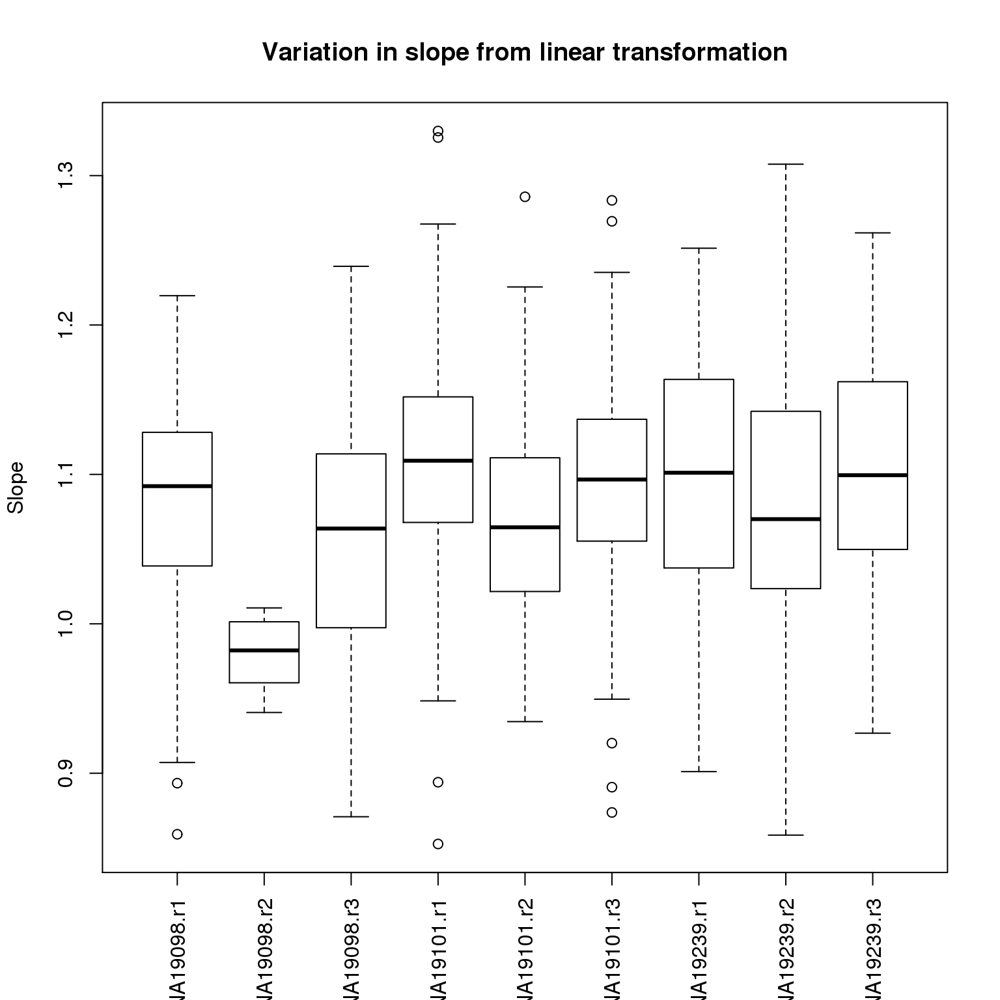
Output linearly transformed molecules.
write.table(round(molecules_cpm_trans, digits = 6), "../data/molecules-cpm-trans.txt", quote = FALSE,
sep = "\t", col.names = NA)PCA of linearly transformed data.
pca_molecules_cpm_trans <- run_pca(molecules_cpm_trans)
pca_molecules_cpm_trans_plot <- plot_pca(pca_molecules_cpm_trans$PCs, explained = pca_molecules_cpm_trans$explained,
metadata = anno_filter, color = "individual",
shape = "replicate") +
labs(title = "Molecules (linearly transformed with ERCC) for single cells")
pca_molecules_cpm_trans_plot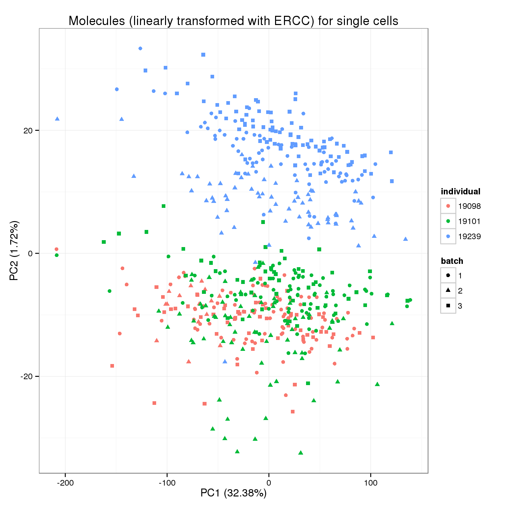
Mixed model for batch-effect correction
Because the linear transformation with the ERCC controls was not sufficient to remove all the unwanted technical variation, we used a mixed model to correct for batch effects.
We adapted limma’s algorithm for estimating variance components due to random effects. This analysis operates under the assumption that biological replicates (or batches within an individual in this case) share similar correlation across genes. Morever, the analysis permits negative correlation between replicates.
Crossed Model
For every single gene, we will fit a mixed model assuming differences between batches are not individual-specific as follows
yijk = μ + αi + bj + ϵijk
,
where yijk is the log2 counts-per-million (cpm) for any gene in individual i, batch j, and cell k, μ is the gene-specific expression level across all cells, αi is the expression level specific to individual i, bj is batch j‘s deviation of expression level from gene-specific expression levels, and ϵijk is the models’ residual error.
We assume that bj follows a normal distribution with bj ∼ N(0, σb2) for j = 1, …, 9, and ϵijk ∼ N(0, σϵ2) for i = 1, 2, 3; j = 1, …, 9; andk = 1, …, nij, where nij denotes the number of cells in individual i, batch j.
Remove unwanted variation
Load the Humanzee package.
library("Humanzee")Create design matrix and compute a consensus correlation coefficient using limma’s duplicateCorrelation function.
block <- anno_filter$batch
design <- model.matrix(~ 1 + individual, data = anno_filter)dup_corrs_file <- "../data/dup-corrs.rda"
if (file.exists(dup_corrs_file)) {
load(dup_corrs_file)
} else{
dup_corrs <- duplicateCorrelation(molecules_cpm_trans,
design = design, block = block)
save(dup_corrs, file = dup_corrs_file)
}Fit a mixed model with the 9 batches being the random effect.
if (file.exists("../data/limma-crossed.rda")) {
load("../data/limma-crossed.rda")
} else {
gls_fit <-
Humanzee::ruv_mixed_model(molecules_cpm_trans,
ndups = 1,
design = design, block = block,
correlation = dup_corrs$cons)
save(gls_fit, file = "../data/limma-crossed.rda")
}Compute expression levels after removing variation due to random effects.
molecules_final <- t( design %*% t(gls_fit$coef) ) + gls_fit$residOutput the cleaned data.
colnames(molecules_final) <- colnames(molecules_cpm_trans)
write.table(round(molecules_final, digits = 6), "../data/molecules-final.txt", quote = FALSE,
sep = "\t", col.names = NA)pca_final <- run_pca(molecules_final)
pca_final_plot <- plot_pca(pca_final$PCs, explained = pca_final$explained,
metadata = anno_filter, color = "individual",
shape = "replicate") +
labs(title = "Molecules (batch corrected) for single cells")
pca_final_plot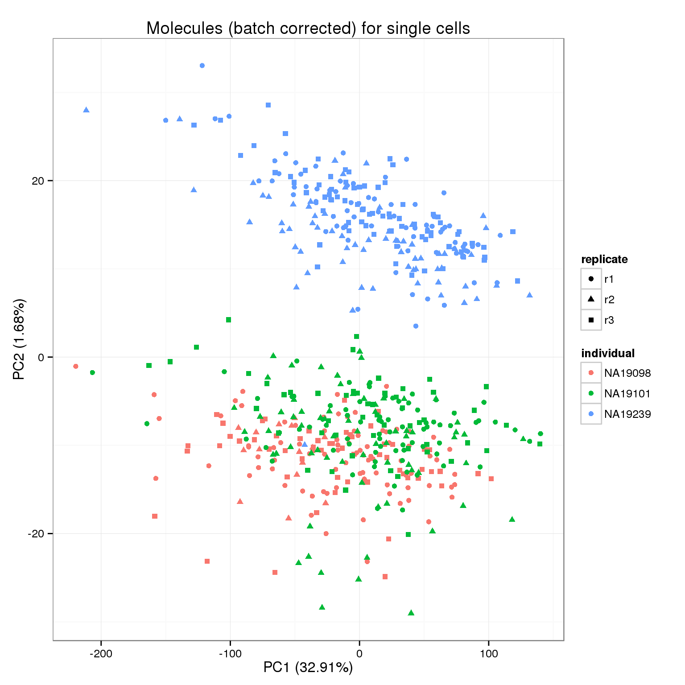
Data transformation figure
theme_set(theme_bw(base_size = 8))
plot_grid(pca_molecules_filter_plot + theme(legend.position = "none"),
pca_molecules_cpm_plot + theme(legend.position = "none"),
pca_molecules_cpm_trans_plot + theme(legend.position = "none"),
pca_final_plot + theme(legend.position = "none"),
labels = LETTERS[1:4])
Session information
sessionInfo()R version 3.2.0 (2015-04-16)
Platform: x86_64-unknown-linux-gnu (64-bit)
locale:
[1] LC_CTYPE=en_US.UTF-8 LC_NUMERIC=C
[3] LC_TIME=en_US.UTF-8 LC_COLLATE=en_US.UTF-8
[5] LC_MONETARY=en_US.UTF-8 LC_MESSAGES=en_US.UTF-8
[7] LC_PAPER=en_US.UTF-8 LC_NAME=C
[9] LC_ADDRESS=C LC_TELEPHONE=C
[11] LC_MEASUREMENT=en_US.UTF-8 LC_IDENTIFICATION=C
attached base packages:
[1] grid stats graphics grDevices utils datasets methods
[8] base
other attached packages:
[1] Humanzee_0.1.0 testit_0.4 cowplot_0.3.1 ggplot2_1.0.1
[5] edgeR_3.10.2 limma_3.24.9 dplyr_0.4.2 data.table_1.9.4
[9] biomaRt_2.24.0 knitr_1.10.5
loaded via a namespace (and not attached):
[1] Rcpp_0.12.0 formatR_1.2 GenomeInfoDb_1.4.0
[4] plyr_1.8.3 bitops_1.0-6 tools_3.2.0
[7] digest_0.6.8 RSQLite_1.0.0 evaluate_0.7
[10] gtable_0.1.2 DBI_0.3.1 yaml_2.1.13
[13] parallel_3.2.0 proto_0.3-10 httr_0.6.1
[16] stringr_1.0.0 S4Vectors_0.6.0 IRanges_2.2.4
[19] stats4_3.2.0 Biobase_2.28.0 R6_2.1.1
[22] AnnotationDbi_1.30.1 XML_3.98-1.2 rmarkdown_0.6.1
[25] reshape2_1.4.1 magrittr_1.5 scales_0.2.4
[28] htmltools_0.2.6 BiocGenerics_0.14.0 MASS_7.3-40
[31] assertthat_0.1 colorspace_1.2-6 labeling_0.3
[34] stringi_0.4-1 lazyeval_0.1.10 RCurl_1.95-4.6
[37] munsell_0.4.2 chron_2.3-45